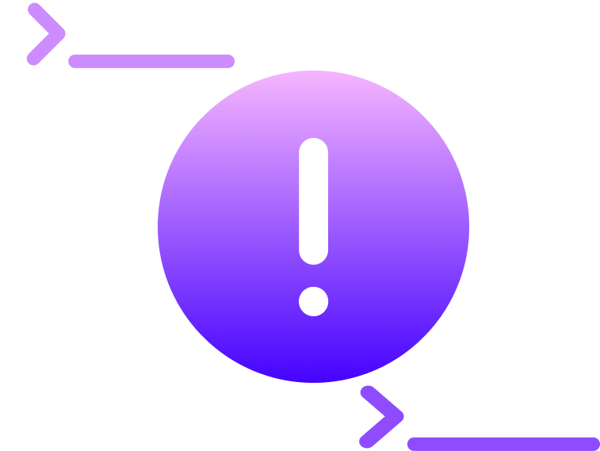

Introducing CodeFlux
Since February of 2023, we have been committed on a mission to empower developers and programmers by bridging the gap between coding languages.
We believe that every developer deserve that novice to intermediate programmers deserve the freedom to understand and utilize code, regardless of its original language.
Using OpenAI's technology (and soon, StableCode-3b), we strive to break down programming language barriers and unlock the full potential of the programming world for everyone.
By offering strong, effective, and accurate translation, CodeFlux aims to expand coding knowledge from to new programmers to the experienced.
So far, we have had two iterations of our solution: The March 2023 "beta" and the May 2023 official release.
In mid-late spring 2024, we plan to release the Spring 2024 release of CodeFlux, serving as a testament to our commitment on improving and making this tool more useful to programmers.

The problem we aimed to solve
Programming has become an integral part of our lives. So much that we need code to run our appliances to our electronic devices. So many programming languages run the most popular operating systems in the world, like Windows, macOS, iOS, and Android.
However, as we continue to code, getting into new programming languages can be very challenging for new to moderate programmers.
Meet CodeFlux
Enter CodeFlux, which is an artificial intelligence-powered transcompiler that translates code between...
- Python
- C++
- Java
- JavaScript
- C#
And, as of the May 2023 release...
- C
- Ruby
... all in a single user interface.